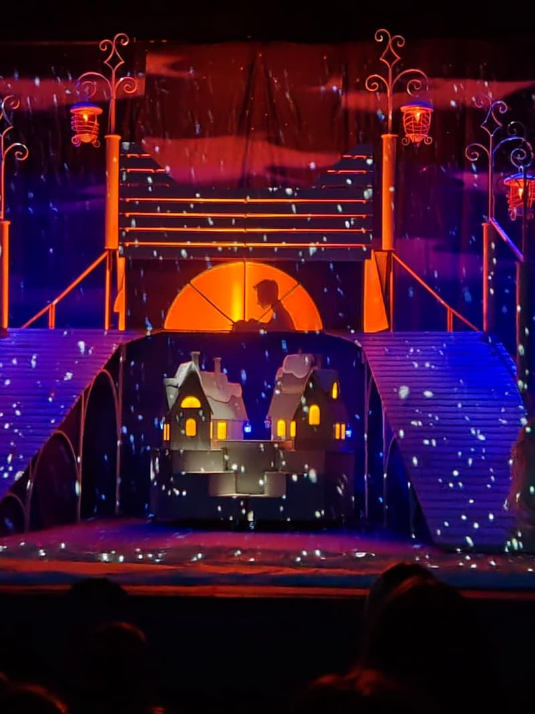
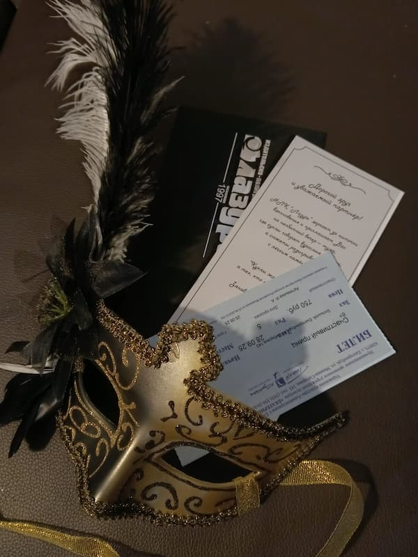
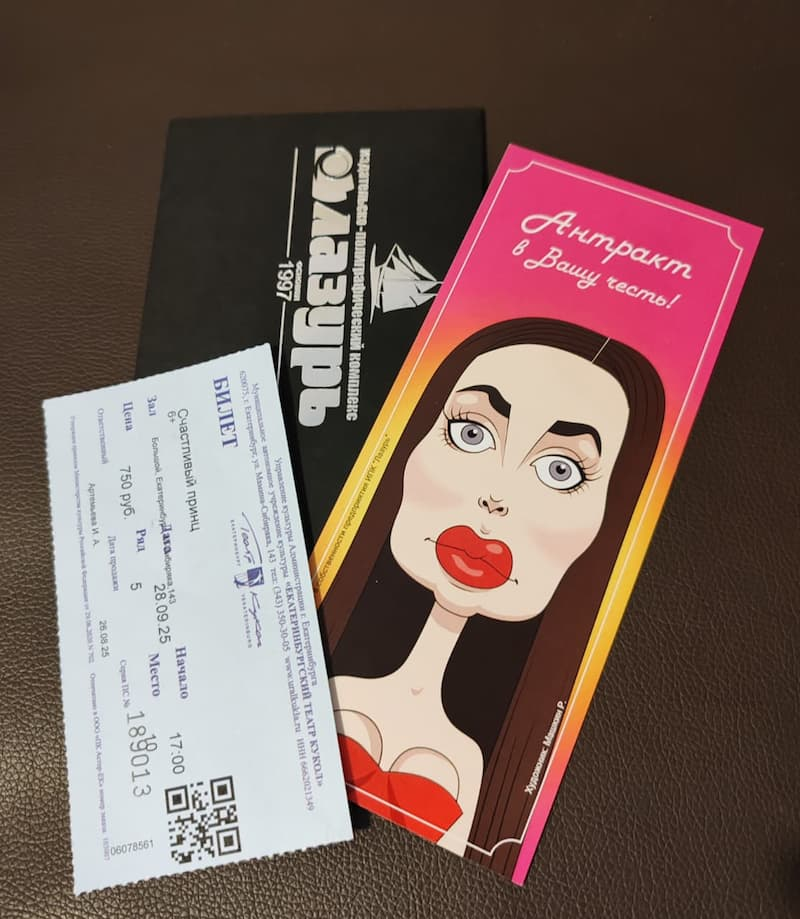
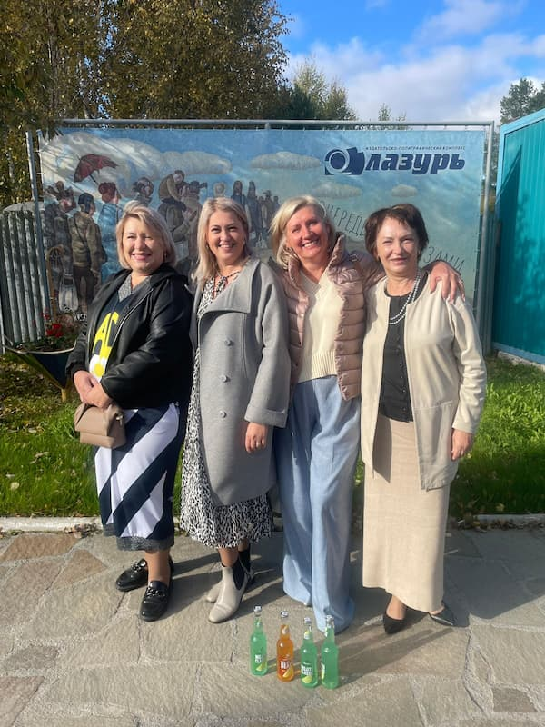
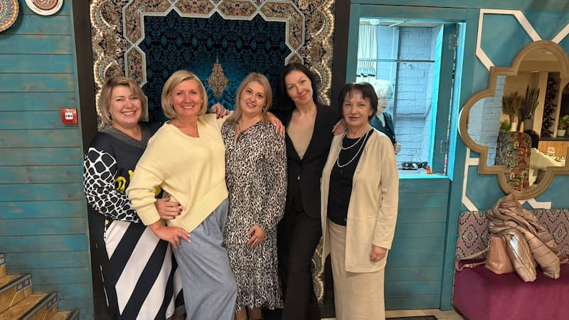
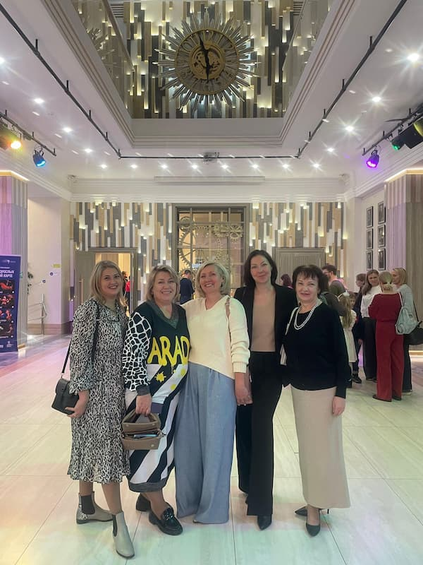

Культурная программа стала важной частью жизни коллектива типографии «Лазурь». В рамках объявленного Года театра компания организует регулярные походы в театры для своих сотрудников и заказчиков.

Очередное культурное мероприятие состоялось в минувшие выходные. Менеджеры компании посетили постановку «Счастливый принц» в кукольном театре. Спектакль, рассчитанный на взрослую аудиторию, произвел неизгладимое впечатление на зрителей.

Сотрудники компании поделились своими впечатлениями, отметив высокий уровень постановки и прекрасную игру актеров. Совместный поход в театр стал не только возможностью приобщиться к искусству, но и отличным способом укрепить командный дух коллектива.

Наташа, одна из участниц похода в театр, поделилась своими эмоциями: «Впервые посетила театр Кукол и осталась очень довольна. Атмосфера, игра актеров и постановка полностью погрузили меня в сказку. Особенно впечатлили костюмы и сценография. Посещение театра — отличный способ провести вечер, насладиться культурой, расширить горизонты и задуматься о важном».

Ольга, коллега Наташи, выразила желание продолжить театральные походы: «Мы ещё хотим. Постановка интересная».

Руководство типографии планирует и дальше развивать культурную программу, организуя для сотрудников и клиентов посещения различных театральных постановок. Такой подход помогает создать благоприятную атмосферу в коллективе и укрепить связи с партнерами.

«Мы считаем, что культурное развитие сотрудников — важная часть корпоративной политики. Театр помогает нам не только отдохнуть, но и получить новые впечатления, которые вдохновляют на работу», — отметили в компании.